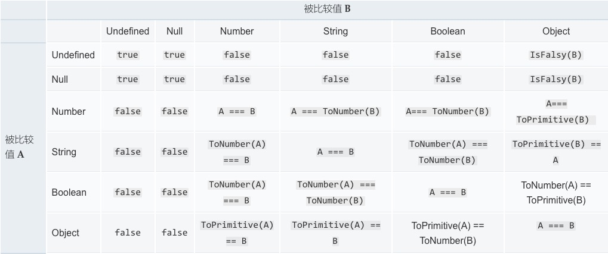

先说结论，==相等操作符会进行隐式转换再比较有可能造成结果的不可预测，所以开发时候更建议使用===全等操作符来做比较。
但是，相等操作符的操作比较也是面试的热门考点之一，这里就稍作总结。
相等操作符号比较转换图

可以得出以下就条容易记忆的点：
- 同类型比较，直接比较内容。
- 除
undefined,null,Objectr以外，Number,String,Boolean之间的比较皆先通过ToNumber(value)转换为Number类型再比较。 - 除自身以外,
undefined只会和null相等，反之亦然。 - 当
Object参与比较的时候会转换为原始值（Primitive）再进行比较，ToPrimitive会先调用对象的valueOf()方法，如果不存在就会再调用toString()方法，然后把拿到的值再进行比较。如果toString()和valueOf()都不存在，就会报TypeError。 Symbol()类型不与任何值相等。
一些关于数据类型的细节
- 为什么有的编程规范要求用 void 0 代替 undefined?
- 因为在
{ ... }局部代码块中，undefined是允许被赋值的，所以使用void 0更稳妥。
- 因为在
- 为什么0.1 + 0.2 != 0.3
- 这个是老生常谈的问题了，原因在于IEEE-754的双精度浮点数规则，
0.1存储成二进制的时候是无限循环二进制导致了。解决的方法可以：
- 这个是老生常谈的问题了，原因在于IEEE-754的双精度浮点数规则，
1 | (0.1 + 0.2).toPrecision(10) == 0.3 |